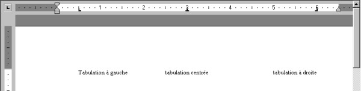

| |
| A propos Pourquoi AbiWord? Généralités Environnement SDI Vs. MDI Installation Windows Linux Intel Linux PPC BeOS Intel BeOS PPC Solaris FreeBSD Les bases #1 Les bases #2 La saisie Le formatage Les paragraphes Les tabulations Les colonnes Les sections Les styles Insertion d'objet Imprimer Rechercher / Remplacer Personnalisation Raccourcis clavier abisource.com FAQ Crédits |
Les tabulationsLes tabulations permettent d'aligner automatiquement en colonnes des éléments de plusieurs lignes, par exemple pour simuler un tableau. Il existe deux types de tabulations : les tabulations par défaut et les tabulations personnalisées. Les tabulations par défautElles se définissent simplement en appuyant sur la touche "Tabs" du clavier. Ainsi, le curseur d'insertion avance à chaque pression de cette touche de 1/2 inch. (d'après la règle) Les tabulations personnaliséesElles permettent de choisir l'emplacement et l'alignement des tabulations. Voici les différents types de tabulations personnalisées que propose AbiWord :
Pour les sélectionner, il suffit de cliquer sur le sélecteur de
tabulations Pour aligner le texte sur cette tabulation, positionner le curseur d'insertion au début du texte à aligner puis appuyer sur la touche "Tabs" du clavier. 
Pour faire varier la tabulation personnalisée, cliquer dessus sur la règle et faire glisser jusqu'à sa nouvelle position. Pour supprimer la tabulation personnalisée, cliquer dessus et faire glisser hors de la règle.
Les tabulations peuvent intervenir :
|